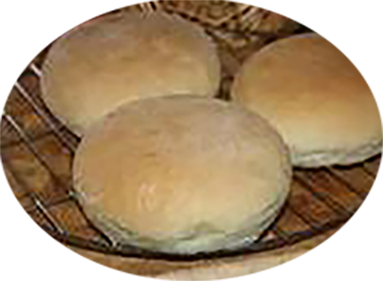

Pan bagnat

Pour
Préparation :
Repos :
Cuisson :
Ingrédients
- 500 gr de farine
- 20gr de levure de boulanger
- 1 cc de sel
- 1 cc de sucre
- 300 ml d’eau tiède environ
- 1 c à soupe d’huile d’olive
Recette
- Diluez la levure dans un peu d’eau tiède avec le sucre
- Dans le bol du pétrin mettre la farine, la levure diluée, le sel et l’huile d’olive.
- Pétrissez pour obtenir une pâte souple
- Laissez reposer pendant 1 heure ou plus.
- Dégazez la pâte et formez des petits pains ronds.
- Laissez levez encore 1 h.
- Préchauffez le four à 210°.
- enfournez pour +/- 20 mn.
- Laissez levez encore 1 h.
|